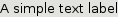
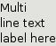
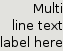

Class GTK2.Label
- Description
A simple text label.
GTK2.Label("A simple text label")GTK2.Label("Multi\nline text\nlabel here")
GTK2.Label("Multi\nline text\nlabel here")->set_justify(GTK2.JUSTIFY_LEFT)GTK2.Label("Multi\nline text\nlabel here")->set_justify(GTK2.JUSTIFY_RIGHT)Properties: float angle Pango.AttrList attributes int cursor-position int ellipsize PANGO_ELLIPSIZE_END, PANGO_ELLIPSIZE_MIDDLE, PANGO_ELLIPSIZE_NONE and PANGO_ELLIPSIZE_START int justfy JUSTIFY_CENTER, JUSTIFY_FILL, JUSTIFY_LEFT and JUSTIFY_RIGHT string label int max-width-chars int mnemonic-keyval int mnemonic-widget string pattern int selectable int single-line-mode int use-markup int use-underline int width-chars int wrap
Signals: copy_clipboard
move_cursor
populate_popup
- Inherit Misc
inherit GTK2.Misc : Misc
- Method create
GTK2.Label GTK2.Label(string|mappingtext_or_props)- Description
Creates a new label.